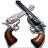
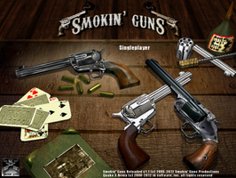
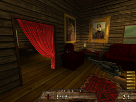
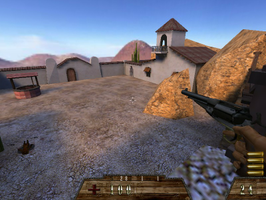

Smokin' Guns
Dieser Artikel wurde für die folgenden Ubuntu-Versionen getestet:
Ubuntu 16.04 Xenial Xerus
Zum Verständnis dieses Artikels sind folgende Seiten hilfreich:

Smokin' Guns  (SG) ist ein kostenloser Ego-Shooter, welcher ursprünglich als Modifikation für Quake 3 Arena entwickelt wurde. Durch die Veröffentlichung der Spiele-Engine durch id Software unter der GNU GPL steht es nun als eigenständige Version zur Verfügung.
(SG) ist ein kostenloser Ego-Shooter, welcher ursprünglich als Modifikation für Quake 3 Arena entwickelt wurde. Durch die Veröffentlichung der Spiele-Engine durch id Software unter der GNU GPL steht es nun als eigenständige Version zur Verfügung.
Die Spieler setzen auf den verschiedenen Karten die vorhandenen Waffen (Messer, Pistolen, Gewehre...) zur Erfüllung des Spielziels im jeweiligen Modus ein.
Eine Originalversion von Quake 3 Arena wird nicht benötigt.
|  |  |
| Menü | Spielszene |
Installation¶
Desura¶
Nachdem man das Spiel über die Internetseite oder den Client ausgewählt hat, kann das Spiel installiert [1] und über diesen gestartet werden.
Hinweis:
Veraltete Version - startet nur mit dem Patch.
Entwicklerseite¶
Von der Entwicklerseite  kann Wahlweise ein deb-Paket oder ein Archiv heruntergeladen werden.
kann Wahlweise ein deb-Paket oder ein Archiv heruntergeladen werden.
Debian-Paket¶
Die Datei smokinguns_VERSIONSNUMMER_i386.deb installieren [2]. Das Spiel ist unter /usr/games/smokinguns/ zu finden. Im Installationsverzeichnis die Ausführrechte für smokinguns.i386 setzen [3][4]. Auf Wunsch einen Menüeintrag [5] erstellen.
Archiv¶
Das Archiv Smokin_Guns_VERSIONSNUMMER.zip entpacken [6] - z.B. nach ~/Spiele/SmokinGuns/. Anschließend in den Ordner wechseln um die Ausführrechte für smokinguns.i386 setzen [3]. Auf Wunsch einen Menüeintrag [5] erstellen.
64-Bit Betriebssystem¶
Unter Umständen startet das Spiel nicht, wenn man ein 64-Bit Betriebssystem nutzt (beispielsweise werden benötigte Bibliotheken nicht gefunden). Offiziell wird derzeit (Version 1.1) noch keine 64-Bit Version des Spiels angeboten, jedoch kann man bei Problemen auf eine Entwicklerversion zurückgreifen.
VoIP¶
Es gibt zwei Wege, um VoIP verwenden zu können. Entweder man verwendet Mumble als eigenständiges Programm und startet es vor Smokin' Guns oder man startet das Spiel mit den Parametern +set cl_useMumble 1. Nachdem man sich mit einem Server verbunden hat, der VoIP unterstützt, kann
Q zum Sprechen verwendet werden.
Hinweis:
Detailinformationen zur Verwendung mit einem Server können der Datei voip-readme.txt aus dem Installationsverzeichnis entnommen werden.
|  |
| Spielszene |
Erweiterungen¶
Zusätzliche Karten und Waffen können von moddb.com heruntergeladen werden. Nachdem die Datei entpackt [6] wurde, kopiert man die .pk3-Dateien ins Installationsverzeichnis. Für Karten wird der Unterordner smokinguns verwendet.
Problembehebung¶
Prüfsumme¶
Die Prüfsumme der heruntergeladenen Dateien kann mittels Hashfunktionen überprüft werden. Die benötigten Vergleichswerte:
smokinguns_1.1-1_i386.deb¶
Release date: 2012/06/08 MD5 : 45bf0d28226131c7244e47e70be5e9d8 SHA1: 68bb944ee80c4173dc1a3d3f2d56d94b0fb4214a
Smokin_Guns_1.1.zip¶
Release date: 2012/06/08 MD5 : f6eac64fa534fa9ff121dda5fd2dba44 SHA1: fe03a21480dbc78731c9e72cc3353973b7553f3e

Infobox¶
| Smokin' Guns | |
| Genre: | Ego-Shooter |
| Sprache: | |
| Veröffentlichung: | 2009 |
| Publisher: | Smokin’ Guns Productions |
| Systemvoraussetzungen: | 1.6 GHz Pentium® 4 / AthlonT XP 2000+ / 1 GB RAM / 450 MB HDD |
| Medien: | Download |
| Strichcode / EAN / GTIN: | - |
| Läuft mit: | nativ |

- Erstellt mit Inyoka
-
 2004 – 2017 ubuntuusers.de • Einige Rechte vorbehalten
2004 – 2017 ubuntuusers.de • Einige Rechte vorbehalten
Lizenz • Kontakt • Datenschutz • Impressum • Serverstatus -
Serverhousing gespendet von